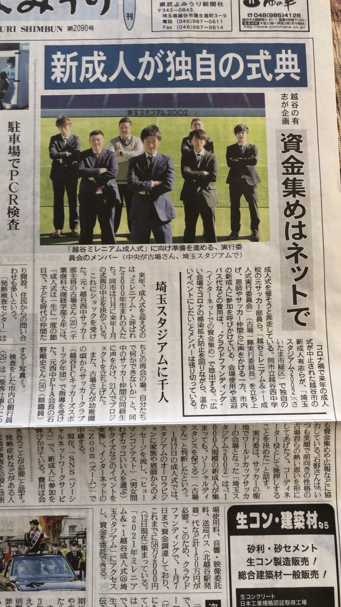
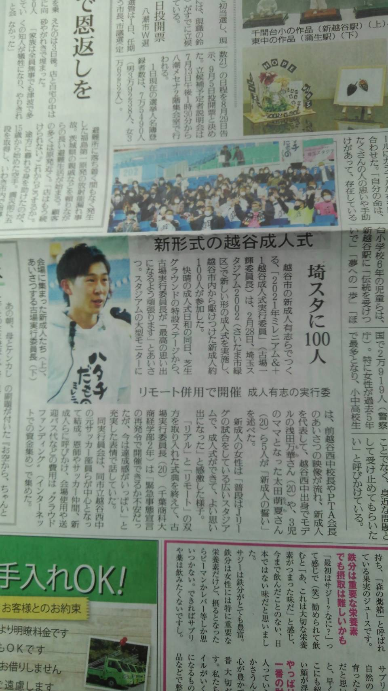
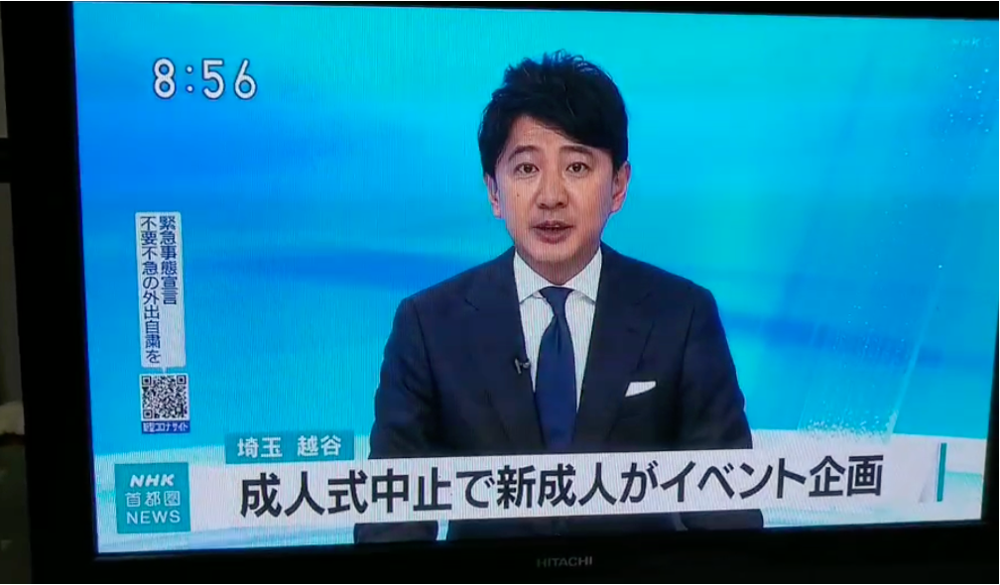
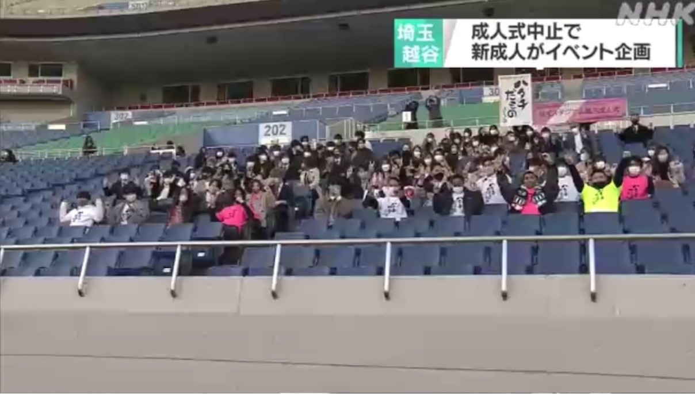

Masato Izumi
東京都市大学大学院 総合理工学研究科 情報専攻 システム情報領域
| 年月 | 経歴 |
|---|---|
| 2016.04 | 日本大学附属第一高等学校 入学 |
| 2019.03 | 日本大学附属第一高等学校 卒業 |
| 2019.04 | 東京都市大学 知識工学部 知能情報工学科 入学 |
| 2023.03 | 東京都市大学 知識工学部 知能情報工学科 卒業 |
| 2023.04 | 東京都市大学大学院 総合理工学研究科 情報専攻 システム情報領域 入学 |
| 年月 | 経歴 |
|---|---|
| 2021.03〜2022.09 | 軽音団体ウエスタンクラブ 部長 |
| 2021.10 | 越谷ミレニアム&+1成人式@埼玉スタジアム 実行委員幹部(書記兼映像プロデューサー) |
| 2022.06〜 | 電子情報通信学会 NOLTAソサイエティ 学生員 |
| 2023.04〜 | 人工知能学会 学生員 |
| 2023.06〜2024.06 | 電子情報通信学会 東京支部学生会運営員会研究発表会グループ(幹事校) 委員 |
越谷ミレニアム&+1成人式@埼玉スタジアム
Date: 2021年2月28日
Location: 埼玉スタジアム2002
Background: 新型コロナウイルスの影響で越谷市では成人式が中止になってしまった。
そこで元越谷市立西中学校のサッカー部のコーチや先生方と共に越谷ミレニアム&+1成人式を企画した。
Role: 実行委員長に声をかけられ、書記・映像プロデューサーとして会議での資料まとめ、
ティザームービー作成、当日のオーロラビジョンでのスライドや映像の作成、頂いた映像の編集、音響の調節を担当した。
Funding: クラウドファンディングにて160万円を集めた。
Guest Messages: 元KRUSH -65キロ級王者 HIROYAさん、元WBAスーパーフェザー級王者
山内 高志さん、COLOR,DEEP,LUVANDSOUL KIKURIさん、DEEPリーダー TAKAさんからお祝いのメッセージを頂いた。
Media Coverage: 東部読売新聞に2回掲載され、当日はNHKの取材が行われNHK首都圏ニュースにて放送された。




| 年月日 | 経歴 |
|---|---|
| 2018.11.19 | 普通運転免許(AT限定) 取得 |
| 2020.09.14 | ITパスポート 取得 |
| 2021.11.06 | G検定 合格 |
原著論文
| 年 | 種別 | 項目 |
|---|---|---|
| 2023.04.01 | 第1著者 | Masato Izumi, Kenya Jin'no "Feature analysis of sentence vectors by image generation model using Sentence-BERT" NOLTA, IEICE, Vol. 14, No.2, pp508-519, Apr. 2023.( DOI: 10.1587/nolta.14.) |
2024.04.01 | 第1著者 | Masato Izumi, Kenya Jin'no "Investigation of the structure of the latent variable space in Sentence-BERT sentence vectors using an image generation model" NOLTA, IEICE, Vol. 15, No.2, pp. 376-388, Apr. 2024.( DOI: https://doi.org/10.1587/nolta.15.376) |
| 2023.07.09 | 第2著者 | Kenya Jin'no, Masato Izumi, Saki Okamoto, Mizuki Dai, Chisato Takahashi, Tatsuro Inami "Fundamental Considerations on Representation Learning for Multimodal Processing" Human Interface and the Management of Information, LNCS14015, pp. 389-399, 2023. Springer ( DOI: https://doi.org/10.1007/978-3-031-35132-7_29 ) |
| 年 | 種別 | 項目 |
|---|---|---|
| 2022.12.13 | 口頭発表 | Masato Izumi, Kenya Jin'no "Investigation of the Influence of Datasets on Image Generation Using Sentence-BERT " 2022 International Conference of Nonlinear Theory and its Applications (NOLTA 2022) , pp. 252-255, on-line, 2022. 12.12-12.25. (DOI:10.34385/proc.71.B1L-E-03) |
| 2023.09.26 | 口頭発表 | Masato Izumi, Kenya Jin'no "Investigation of Relationships Within the Latent Variable Space of Sentence-BERT Sentence Vectors" 2023 International Conference of Nonlinear Theory and its Applications (NOLTA 2023) , Cittadella Campus of the University of Catania, Catania, Italy, Sep. 26-29, 2023. |
| 2023.07.24 | 第2著者 | Kenya Jin'no, Masato Izumi, Saki Okamoto, Mizuki Dai, Chisato Takahashi, Tatsuro Inami "Fundamental Considerations on Representation Learning for Multimodal Processing" HCI International 2023, 25TH International Conference on Human-Computer Interaction (HCII2023) , AC Bella Sky Hotel and Bella Center, Copenhagen, Denmark, 23-28 July 2023. |
| 年 | 種別 | 項目 |
|---|---|---|
| 2022.06.11 | 口頭発表 | 泉 諒音, 神野 健哉 "Sentence-BERTの文ベクトルのUMAPによる特徴解析" 2022年度 NOLTAソサイエティ大会, NLS-17(大阪大学, 2022. 6.11) |
| 2023.06.07 | 口頭発表 | 泉 諒音, 神野 健哉 "画像生成モデルを用いたSentence-BERTの文ベクトルの調査" 2023年度 人工知能学会 全国大会 (JSAI2023) , 2D6-GS-3-05, (熊本, 2023. 6.6-6.9) |
| 2023.06.10 | 口頭発表 | 泉 諒音, 神野 健哉 "Sentence-BERTの文ベクトルの潜在変数空間内での関係性の検討" 2023年度 NOLTAソサイエティ大会, (東京都市大学, 2023. 6.10) |
| 2024.06.08 | 口頭発表 | 泉 諒音, 神野 健哉 "画像生成モデルによる自然言語処理モデルの潜在変数空間の比較" 2024年度 NOLTAソサイエティ大会, (西日本総合展示場AIM, 福岡県北九州市, 2024. 6.8) |
国内学会
| 年 | 種別 | 項目 |
|---|---|---|
| 2022.02.26 | 口頭発表 | 泉 諒音, 神野 健哉 "BERTによる文章ベクトルのk~means法を用いた文章分類" 東北大学電気通信研究所 共同プロジェクト研究・非線形ワークショップ 合同研究会 p. 37, P22(オンライン, 2022. 2.26-2.27) |
| 2022.08.04 | 口頭発表 | 泉 諒音, 神野 健哉 "UMAPによるSentence-BERTにおける入力文の変化に対する文ベクトルの検討" 電子情報通信学会 複雑コミュニケーション研究会 , CCS2022-30, (北海道大学, 2022, 8.4-8.5) |
| 2022.09.06 | 口頭発表 | 泉 諒音, 代 美月, 神野 健哉 "Sentence-BERTを用いた画像生成における車の色変化の実験" 電子情報通信学会 2022年ソサイエティ大会 N-1-10 (オンライン, 2022, 9.6-9.9) |
| 2022.09.13 | 口頭発表 | 泉 諒音, 神野 健哉 "Sentence-BERTの文ベクトルによる画像生成" 情報処理学会/電子情報通信学会 第21回情報科学技術フォーラム（FIT2022） , CE-003 (慶應義塾大学, 2022, 9.13-9.15) |
| 2022.11.5 | 口頭発表 | 泉 諒音, 神野 健哉 "Sentence-BERTを用いた画像の擬似的テキスト変換モデルの提案" 東北大学電気通信研究所 共同プロジェクト研究・非線形ワークショップ 合同研究会 , P06, (東北大学電気通信研究所, 2022, 11.4-11.6) |
| 2023.03.08 | 口頭発表 | 泉 諒音, 神野 健哉 "Sentence-BERTの文ベクトルの性質を用いた画像加工の実験" 電子情報通信学会 2023年総合大会 , D-12-9, (芝浦工業大学, 2023, 3. 7-3.10) |
| 2023.03.17 | 口頭発表 | 泉 諒音, 神野 健哉 "Sentence-BERTで生成される文ベクトルを用いた類義語間の類似性の調査" 電子情報通信学会 非線形問題研究会 , NLP2022-146, (長崎大学 文教キャンパス総合教育研究棟3F大講義室, 2023,3.15-3.17) |
| 2023.09.08 | 口頭発表 | 泉 諒音, 神野 健哉 "Sentence-BERTの文ベクトルにおける色表現の構造についての調査" 電子情報通信学会/情報処理学会 第22回情報科学技術フォーラム (FIT2023) ,(大阪公立大学, 2023, 9.6-9.8) |
| 2023.11.28 | 口頭発表 | 泉 諒音, 神野 健哉 "Sentence-BERTの画像生成モデルのデータセットの違いによる潜在変数空間の違いについての調査" 電子情報通信学会 非線形問題研究会 ,(名護市産業支援センター, 沖縄県名護市, 2023, 11.28-11.29) |
| 2024.03.06 | 口頭発表 | 泉 諒音, 神野 健哉 "画像生成モデルを用いた画像変化による潜在変数空間の調査" 電子情報通信学会 2024年総合大会 ,(広島大学 東広島キャンパス, 2024, 03.04-03.08) |
| 2024.06.07 | 口頭発表 | 泉 諒音, 神野 健哉 "生成画像による異なる自然言語処理アーキテクチャの潜在変数空間の検討" 電子情報通信学会 非線形問題研究会 ,(西日本総合展示場AIM, 福岡県北九州市, 2024, 6.6-6.7) |
| 2024.07.29 | 口頭発表 | 泉 諒音, 神野 健哉 "自然言語処理モデルの潜在空間における色情報の捉え方の視覚的比較と検討" 電子情報通信学会 複雑コミュニケーション研究会 ,(モエレ沼公園 会議室, 北海道 札幌市, 2024, 7.29-7.30) |
| 2024.09.04 | 口頭発表 | 泉 諒音, 神野 健哉 "異なるアーキテクチャを持つ自然言語処理モデルの潜在空間の可視化と比較" 電子情報通信学会/情報処理学会 第23回情報科学技術フォーラム (FIT2024) ,(広島大学, 2024, 9.4-9.6) |
| 2023.05.13 | 第2著者 | 神野 健哉, 泉 諒音, 岡本 紗季, 井波 辰朗, 代 美月, 髙橋 知里 "マルチモーダル処理のための表現学習の基礎的考察" 電子情報通信学会 非線形問題研究会, , NLP2023-6, 電子情報通信学会 非線形問題研究会, NLP2023- (福島, 2023, 5.13) |
研究
研究について
私はマルチモーダル処理を目指した自然言語処理モデルの潜在変数構造について研究しています。近年、自然言語処理モデルはchat-gptなどの大規模なモデルの登場により、驚異的な進化を遂げています。
しかし、これらのモデルはその出力結果がどのようにして得られるのか、その内部のメカニズムがブラックボックス化されてしまっています。
私の研究は、このブラックボックス化されたインプットから生成される潜在変数の解明に焦点を当てています。潜在変数の構造を理解することで、モデルの再学習や出力結果の原因解明に寄与することができます。また、潜在変数の操作によって異なるドメイン間の変換やインプットの統合を実現し、マルチモーダル処理AIの発展を目指しています。
具体的には、BERTというモデルが生成する潜在変数について研究を行っています。しかし、文章は離散的な性質を持っており、潜在変数の数字だけを見て判断するのは困難です。そのため、文章を連続的な画像に変換するモデルを開発し、視覚的な手法で潜在変数空間を解明を行なっています。
私の研究は、自然言語処理モデルの透明性向上やマルチモーダル処理の実現に寄与することを目指しています。
関連研究分野
スキル
経験のある言語やソフト一覧